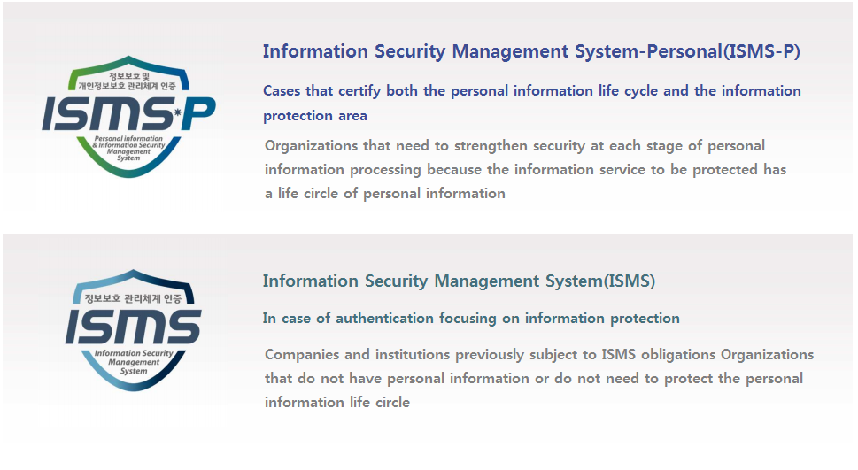

ISMS-P

ISMS-P
• ISMS-P stands for the integrated management system certification of information protection and personal information
protection. The check items of ISMS(Information Security Management System) and PIMS(Personal Information
Management System) that were previously operated separately are similar.
As a result of the separate operation of the two certifications, there was confusion in the company, incurring financial
and manpower burdens. In order to prevent such inconvenience, it has been integrated in accordance with related laws
(Article 47 of the “Act on Promotion of Information and Communications Network Utilization and Information
(Protection”, Article 47-3, and Article 32-3 of Personal Information Protection Act).
• Currently, there are two types of certification, ISMS and ISMS-P, and the outline is as follows.

AWS Professional Services
Security, Risk Management & Compliance Consultant (SRC)
• SCR will collaborate with customers and partners to Design, build and optimize security, DevOps , cloud migration to help
accelerate business value by providing a secure cloud operating environment.
• SRC helps protect customer environment and data with best practices, methodology for effectively manage security
risks and assist customer to develop technical competencies.
SK infosec Information Security Management System-Personal(ISMS-P)
certification consulting
• SK infosec is the No. 1 security consulting partner in Korea and has a history of exceptional performance, proven ability,
and differentiated quality that provides the best solutions and values.
• SK infosec’s security consulting has different areas of expertise digital security, compliance, information protection
management system, privacy protection, new ICT, and so on to provide the most efficient strategies
for information protection and system improvement.
• SK infosec comply with compliance by applying ISMS-P consulting service based on professional and
systematic methodology and security technology from various perspectives.